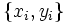
,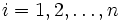
. Die Nullhypothese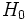
ist, dass die Mediane der verbundenen Stichproben gleich sind, während die Alternativhypothese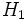
ein- oder beidseitig sein kann. Der Wilcoxon-Vorzeichen-Rang-Test unterscheidet sich von dem Vorzeichentest dadurch, dass der Betrag der Werte berücksichtigt wird und nicht einfach nur die Richtung der Werte.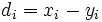
gesucht.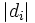
werden nach Rang geordnet und den verbundenen Werten von wird der Durchschnitt der verbundenen Ränge zugewiesen. Der Anwender kann wählen, ob Fälle ignoriert werden sollten, bei denen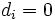
, indem sie vor oder nach dem Ordnen nach Rang entfernt werden. bezeichnet.
bezeichnet.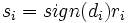
.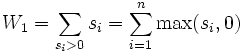
wird berechnet.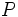
, die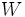
enspricht, abhängig von der Wahl der Alternativhypothese, . Wenn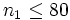
, wird P genau berechnet; ansonsten wird eine Approximation an zurückgegeben, die auf der approximativen Teststatistik der Normalverteilung basiert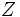
, wobei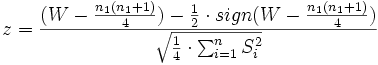